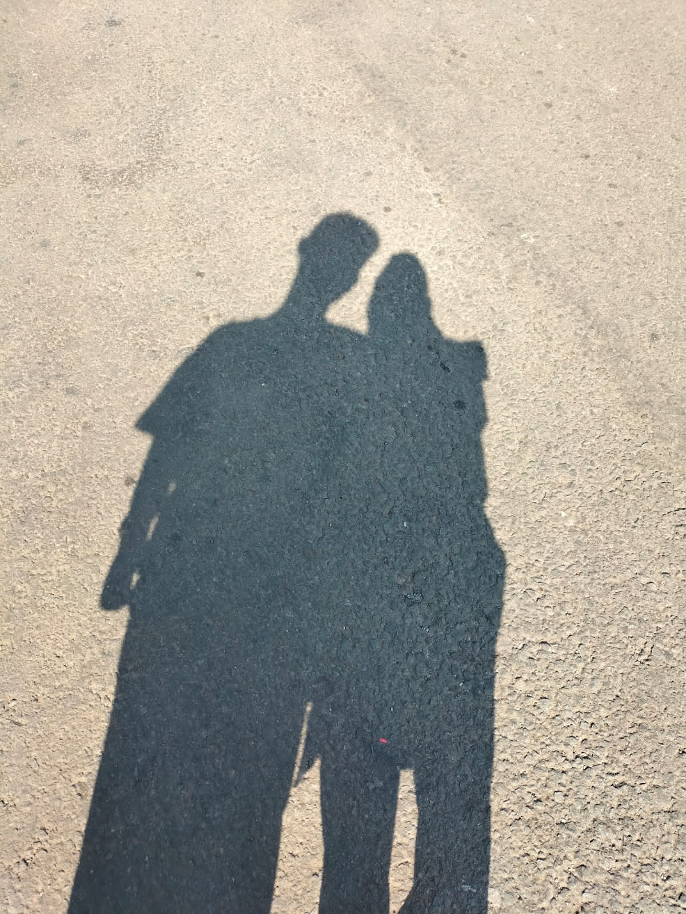

Bagi kebanyakan orang, Bekasi mungkin hanya terlihat sebagai sebuah kota satelit yang sibuk di timur Jakarta. Sebuah metropolis yang dipenuhi oleh deretan kawasan industri raksasa, kepulan asap kemajuan, gemerlap pusat perbelanjaan modern, dan deru transportasi canggih yang bergerak cepat membelah kota. Namun bagi saya, Bekasi memiliki dimensi yang jauh lebih dalam dan sakral dari sekadar semua hiruk-pikuk urban tersebut. Kota ini adalah garis awal dari seluruh perjalanan hidup saya—tanah kelahiran tempat saya pertama kali menghirup udara dunia, tumbuh besar, dan merajut mimpi-mimpi masa kecil. Bekasi adalah rumah dalam arti yang sesungguhnya. Namun takdir yang tertulis di kota ini ternyata jauh lebih indah dari yang pernah saya bayangkan. Di antara jutaan langkah manusia yang berlalu-lalang di sudut-sudut jalannya, di kota inilah takdir mempertemukan saya dengan seseorang yang kini menjadi alasan di balik senyuman saya—pacar saya yang sekarang. Pertemuan kami seolah menjadi plot cerita romantis terbaik yang sengaja ditulis oleh semesta, mengubah sudut-sudut kota Bekasi yang dulunya biasa saja menjadi tempat-tempat penuh kenangan manis yang tak akan pernah terlupakan. Di tengah teriknya udara Bekasi, ada kesejukan yang hadir setiap kali mengingat momen pertama kali kami bersitatap. Setiap jembatan, setiap lampu merah, dan setiap rute jalan yang kami lewati kini berubah menjadi saksi bisu sebuah kisah romansa yang tumbuh subur. Di balik julukan resminya sebagai "Kota Patriot" yang sarat akan sejarah perjuangan para pahlawan bangsa, Bekasi juga menyimpan sisi Wonderful yang sangat romantis. Kota ini membuktikan bahwa cinta dan kehangatan bisa tumbuh dengan indah bahkan di tengah kepungan hutan beton yang dinamis. Dari kemudahan transportasi modern yang kini terintegrasi, hingga ruang-ruang publik tempat sepasang kekasih saling bertukar cerita, Bekasi selalu punya cara tersendiri untuk membuat siapa saja jatuh cinta pada atmosfernya. Ini bukan lagi sekadar tentang sebuah kota di peta Jawa Barat. Ini adalah Bekasi, sebuah mahakarya visual tentang kemajuan zaman yang di dalamnya tersimpan detak jantung, memori masa kecil, cerita tentang kepulangan, dan sebuah kisah cinta yang manis. Sebuah tempat di mana masa lalu saya dilahirkan, masa sekarang saya dipertemukan dengan kebahagiaan, dan masa depan yang terus dirajut dengan penuh harapan.